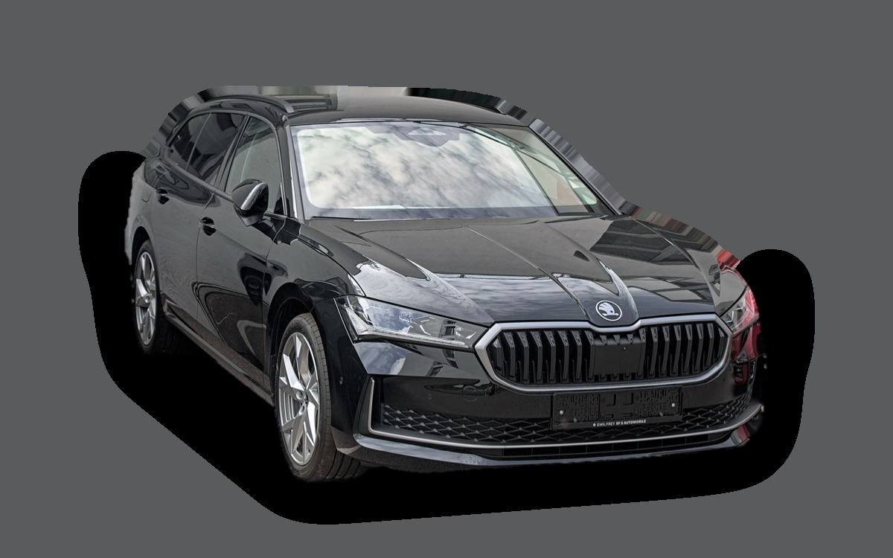
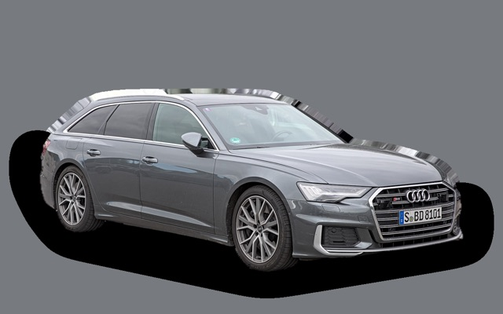
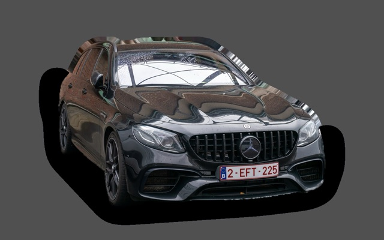
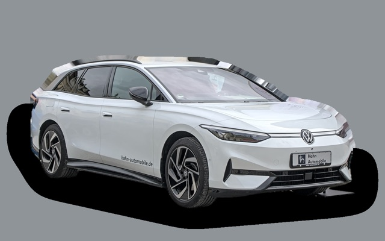
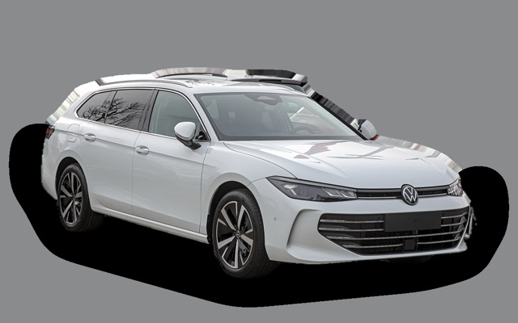
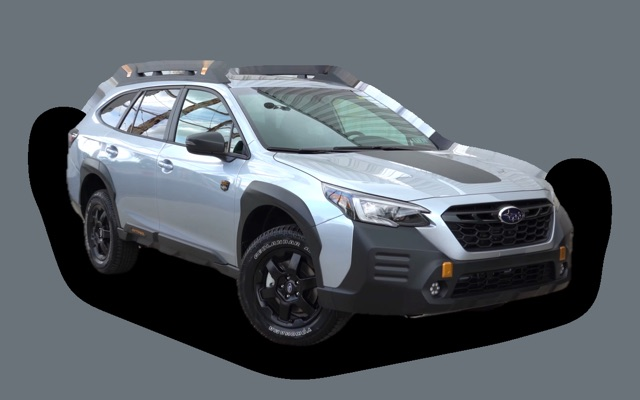
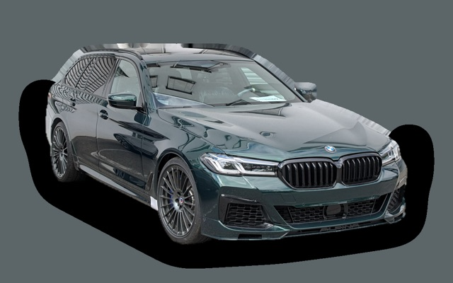

Vad kostar en Skoda Superb Kombi per månad?
En Skoda Superb Kombi från 2026 kostar cirka 6 189 kr i månaden, allt inräknat.


Månadskostnad per årsmodell
| Årsmodell | Version i beräkningen | Pris | Per månad | Betyg |
|---|---|---|---|---|
| 2026 | 1.5 eTSI 150 DSG, Selection | 440 700 kr | 6 189 kr | C |
Räknat på 5 års ägande och 1 250 mil per år, med bränslepriser från 2026-10-22. Månadskostnaden innehåller värdeminskning, drivmedel, service och reparationer, försäkring och fordonsskatt.
Så fördelas kostnaden för en 2026:a
- Värdeminskning: 3 459 kr/mån
- Drivmedel: 1 293 kr/mån
- Service och reparationer: 428 kr/mån
- Försäkring: 597 kr/mån
- Fordonsskatt: 412 kr/mån
Leasa eller köpa ny?
Škoda Privatleasing erbjuder Superb Combi Selection Explore Edition iV 204 från 4 995 kr i månaden i 36 månader och 1 000 mil per år. Så mycket kostar det jämfört med att köpa samma bil ny för 507 900 kr och sälja den efter 36 månader, räknat på 1 250 mil per år och 5 procents ränta.
Leasa är billigast 1 551 kr mindre per månad, 55 836 kr på 36 månader.
| Per månad | Leasa | Köpa |
|---|---|---|
| Leasingavgift, 1 250 mil per år | 5 242 kr | – |
| Uppläggnings- och aviavgift | 73 kr | – |
| Värdeminskning | – | 4 688 kr |
| Ränta på pengarna, 5 % | – | 1 765 kr |
| Service och reparationer | ingår | 413 kr |
| Drivmedel | 1 123 kr | 1 123 kr |
| Försäkring | 692 kr | 692 kr |
| Fordonsskatt | 30 kr | 30 kr |
| Totalt per månad | 7 160 kr | 8 711 kr |
| Totalt på 36 månader | 257 760 kr | 313 596 kr |
Du kör 250 mil mer per år än erbjudandet räknar med. Märkets pris för fler mil: 248 kr i månaden. Škoda Privatleasing: Superb Combi Selection Explore Edition iV 204, 36 månader, 1 000 mil per år, service ingår, rörlig avgift som följer räntan. Uppläggningsavgift 495 kr och aviavgift 59 kr i månaden. Källa: privatleasing.skoda.se, avläst 26 oktober 2026.
Köpa: 507 900 kr för en ny bil i samma version, och 339 130 kr tillbaka när du säljer den efter 3 år. Restvärdet bygger på annonspriserna för 3 år gamla bilar, justerat för att du kör 3 750 mil på 3 år i stället för typiska 6 300 mil. Räntan är vad pengarna kostar: ränta på ett billån, eller räntan du går miste om på sparade pengar. Drivmedel, försäkring och skatt är desamma. Övermil och onormalt slitage betalas när leasingbilen lämnas tillbaka, och byter du in en köpt bil hos en handlare får du oftast mindre än annonspriset.
Räkna med din egen körsträcka och ränta · Alla leasingbilar jämförda
Begagnatpriser i annonser
| Årsmodell | Medianpris | Annonser | Typiskt miltal |
|---|---|---|---|
| 2026 | 464 900 kr | 20 | 1 200 mil |
| 2025 | 399 900 kr | 57 | 2 900 mil |
| 2024 | 377 400 kr | 22 | 4 700 mil |
Medianpriset i svenska annonser per årsmodell i oktober 2026 (källa: Blocket). Annonspriser är utgångspriser, och slutpriset kan bli lägre.
Motorer och versioner
| Motor | Drivmedel | Effekt | 0–100 km/h | Förbrukning (WLTP) | Räckvidd | Årsmodeller | Pristillägg |
|---|---|---|---|---|---|---|---|
| 1.5 eTSI 150 DSG | Bensin | 150 hk | 9,2 s | 6 l/100 km | – | från 2024 | – |
| 2.0 TDI 150 DSG | Diesel | 150 hk | 9,1 s | 5 l/100 km | – | från 2024 | +20 000 kr |
| Laddhybrid 1.5 iV 204 | Laddhybrid | 204 hk | 8,1 s | 2 l/100 km + 13 kWh/100 km | – | från 2024 | +72 200 kr |
| 2.0 TDI 193 4x4 | Diesel | 193 hk | 7,7 s | 5,8 l/100 km | – | från 2024 | +34 500 kr |
- Utrustning: Selection, Sportline (+40 600 kr), Laurin & Klement (+62 300 kr)
Fakta
- Kaross
- Kombi
- Årsmodeller
- sedan 2024
- Nypris från
- 440 700 kr
- Bagage
- 690 liter
- Euro NCAP
- 5 av 5 stjärnor
- Nybilsgaranti
- 3 år
- Driftsäkerhet
- 4 av 5
- Helförsäkring, uppskattning
- 8 100 kr/år
- Service, uppskattning
- 4 300 kr/år
Vanliga fel att ha koll på
- DSG-låda DQ200 (mekatronik, koppling), reparation cirka 20 000 kr
- Vattenpump och termostathus i plast läcker, reparation cirka 6 500 kr
- EGR och partikelfilter (TDI), reparation cirka 9 000 kr
- Haldex-pump (fyrhjulsdrift), reparation cirka 7 000 kr
- DSG-låda (mekatronik), reparation cirka 18 000 kr
Felen gäller vissa motorer och årsmodeller. I kalkylatorn räknas risken för just den version du väljer.
Fördelar och nackdelar
Fördel
Enormt baksäte och snål diesel.
Nackdel
Dieseln har höga tillägg i fordonsskatten.
Liknande bilar

Audi A6 Avant5 867 kr/mån som 2023:a
Mercedes-Benz E-klass Kombi W2135 048 kr/mån som 2020:a
Volkswagen ID.7 Tourer7 358 kr/mån som 2026:a
Volkswagen Passat7 452 kr/mån som 2026:a
Subaru Outback4 873 kr/mån som 2023:a
BMW 5-serie Touring4 773 kr/mån som 2020:a
Uppdaterad 2026-10-26 · annonsdata okt 2026